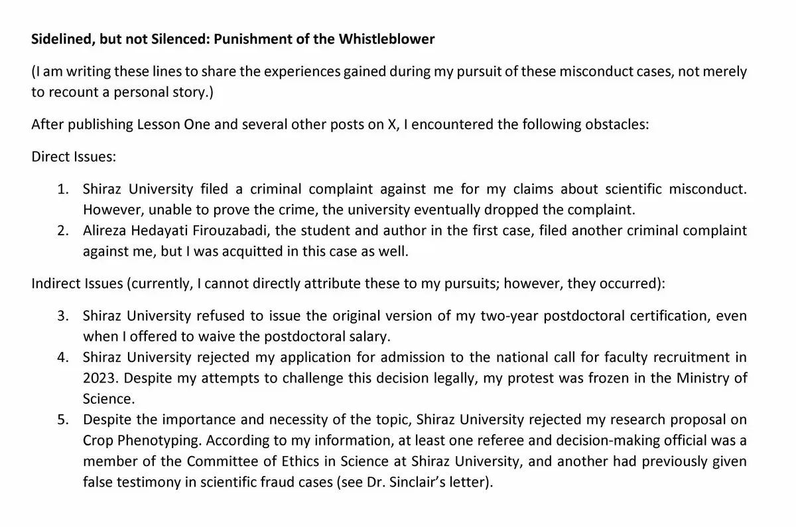
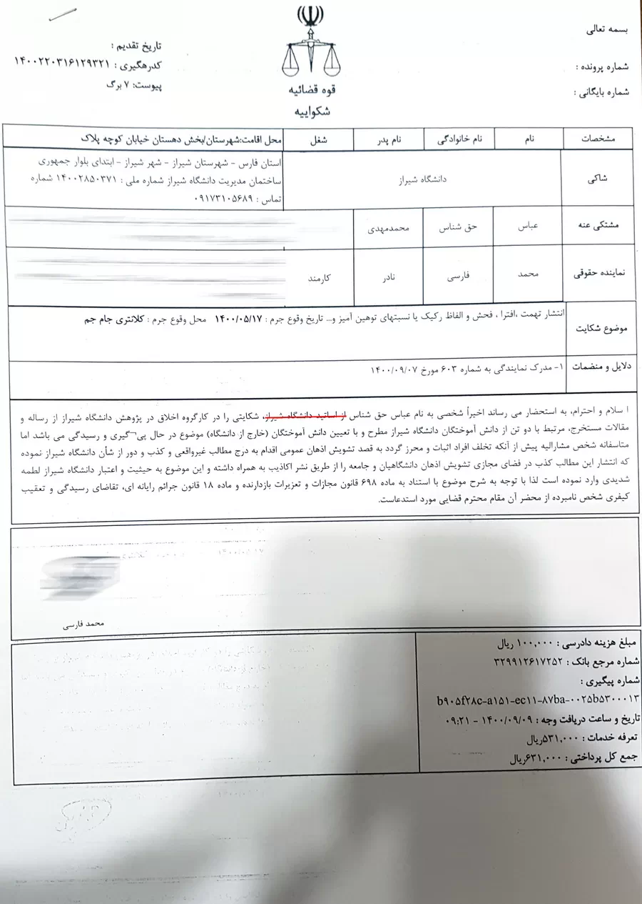
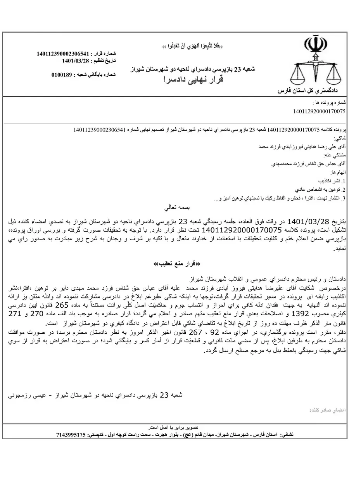

Before continuing the story of my efforts to obtain correction of the scientific record, it is worth mentioning another aspect of this experience.
After receiving the Research Ethics Committee’s ruling, I reached a conclusion: if institutional decisions were going to be made behind closed doors, the public deserved to know what had happened.
I therefore began speaking openly about the cases and their handling.
At the time, I used the phrase “The Death of the University.”
The metaphor was simple.
A living organism possesses the ability to recognize contamination, isolate it, and remove it.
A university should be capable of doing the same.
When a scientific institution can no longer identify and correct serious problems within its own research output, something essential has ceased to function.
Later, I encountered a saying attributed to Imam Ali:
“The liar and the dead are alike. The superiority of the living over the dead lies in trust; when a person's words are no longer trusted, his life is nullified.”
That idea remained with me.
The issue was never whether a university could make mistakes.
Every institution does.
The question was whether it remained capable of confronting them honestly.
Eventually, Shiraz University acted upon the warning contained in the Research Ethics Committee’s ruling.
Using my public statements and several other allegations, the university filed a legal complaint against me.
The matter proceeded to two hearings before the Dispute Resolution Council.
The case went nowhere.
No action was ultimately taken, and the complaint was abandoned.
In a separate case, the doctoral student involved in the “Lost Farm” episode filed a complaint against me with the support of the university.
That case also ended in dismissal, and the ruling became final.



Beyond these formal proceedings, other obstacles emerged in my academic and professional activities.
Whether all of them were directly connected to my pursuit of these misconduct cases is impossible for me to establish with certainty.
What I can say is that they occurred during the same period, and within an environment shaped by the influence of individuals whose roles in the story have appeared repeatedly throughout Lesson One.
For me, this part of the experience raised a broader question.
How should scientific institutions respond to criticism?
By investigating the evidence?
Or by confronting the person who presents it?
The answer to that question may determine whether a scientific system becomes stronger through criticism or weaker through avoidance.